flowchart TD
A(["🔊 2 sons différents"])
B{"Distribution dictée<br/>par l'environnement ?"}
C{"Même sens ?"}
D(["🔵 1 phonème, 2 allophones<br/>distribution complémentaire"])
E(["🔴 2 phonèmes"])
F(["🟢 1 phonème, 2 allophones<br/>distribution libre"])
A --> B
B -->|Oui| D
B -->|Non| C
C -->|Non| E
C -->|Oui| F
classDef start fill:#eef2ff,stroke:#6366f1,stroke-width:3px,color:#1e1b4b
classDef question fill:#fff7ed,stroke:#f97316,stroke-width:2px,color:#7c2d12
classDef complementary fill:#eff6ff,stroke:#3b82f6,stroke-width:2px,color:#1e3a8a
classDef phonemes fill:#fef2f2,stroke:#ef4444,stroke-width:2px,color:#7f1d1d
classDef free fill:#f0fdf4,stroke:#22c55e,stroke-width:2px,color:#14532d
class A start
class B,C question
class D complementary
class E phonemes
class F free
Rappels
2.1 Introduction
2.1.1 Une expérience visuelle
_
2.2 Alphabet phonétique international
- Transcrire… comment?
- Alphabet Phonétique International (API)
- Pas de raison de préférer un système d’écriture
- Un son = un symbole
- [vɛʀ]
- « ver, vers, vert, verre, vair »
- « couvent »
- [kuvɑ̃] ou [kuv]
- [vɛʀ]
- Transcrire… quoi?
- Transcriptions phonétiques entre [] vs. transcriptions phonologiques entre //
- L’API représente par un symbole chacun des sons qui existent en tant que phonèmes dans une langue du monde.
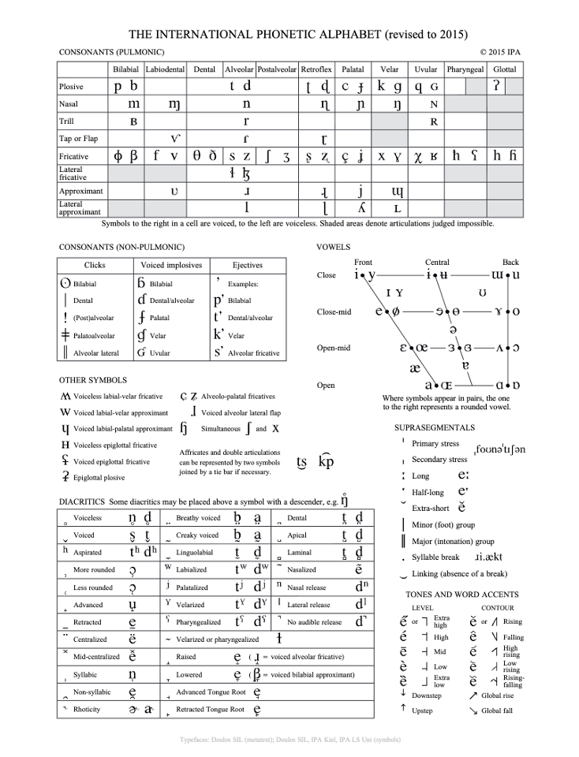
2.3 Voyelles du français
| Symbole API | Graphies courantes | Exemples |
|---|---|---|
| /i/ | i, y, î | lit, stylo, île |
| /e/ | é, er, ez | blé, aimer, chez |
| /ɛ/ | è, ê, ai, ei | père, fête, lait, reine |
| /a/ | a, à | patte, là |
| /ɑ/ | â | pâte, âme |
| /ɔ/ | o, au | bol, sol |
| /o/ | o, eau, au | eau, mot, beau |
| /u/ | ou | loup, tout |
| /y/ | u, û | jupe, flûte |
| /ø/ | eu, œu | bleu, jeu, nœud |
| /ɑ̃/ | an, am, en, em | banc, temps, vent |
| /ɔ̃/ | on, om | bon, nom |
| /ɛ̃/ | in, im, ain, ein | brin, pain, plein |
| /œ̃/ | un, um | brun, parfum |
2.4 Les sons du français en API
| a | patte | ŋ | camping |
| ɑ̃ | blanc | o | oser |
| b | beau | ɔ | botte |
| ʃ | chou | ɔ̃ | bon |
| d | doux | p | peau |
| e | été | ʁ | rage |
| ɛ | elle | s | soupe |
| ɛ̃ | pain | t | toute |
| ə | le | u | cou |
| f | fée | y | but |
| ɡ | gout | ø | deux |
| ʒ | journal | œ | peur |
| i | il | œ̃ | brun |
| j | viens | v | voute |
| k | cou | w | oui |
| l | lit | ɥ | huit |
| m | mou | z | zéro |
| n | net | ||
| ɲ | vigne |
2.5 Notion de phonème
- Un son qui permet de distinguer deux mots de sens différent.
- La fonction des sons dans la langue est de distinguer des mots de sens différent.
- Ex. /R/ vs. /l/ pour vs. poule
- Unité abstraite regroupant l’ensemble des propriétés distinctives (traits) d’un son d’une langue.
- Infinité phonétique vs. nombre fini de phonèmes
Sons permettant de distinguer deux mots de sens différent
Paires minimales :
BelangrijkDéfinition
Paires de morphèmes de sens différent qui ne diffèrent que par un seul segment
Permettent de dresser l’inventaire phonologique d’une langue
Ex.
/pɛ̃/vs/bɛ̃/,/puR/vs/pul/
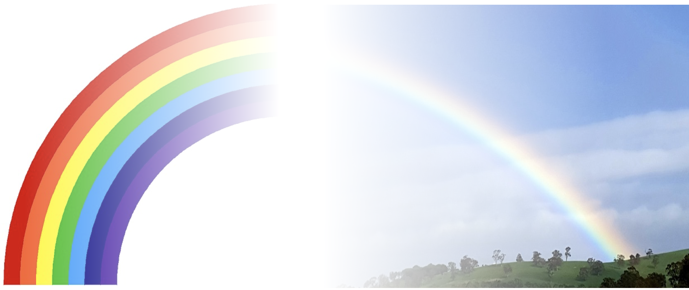
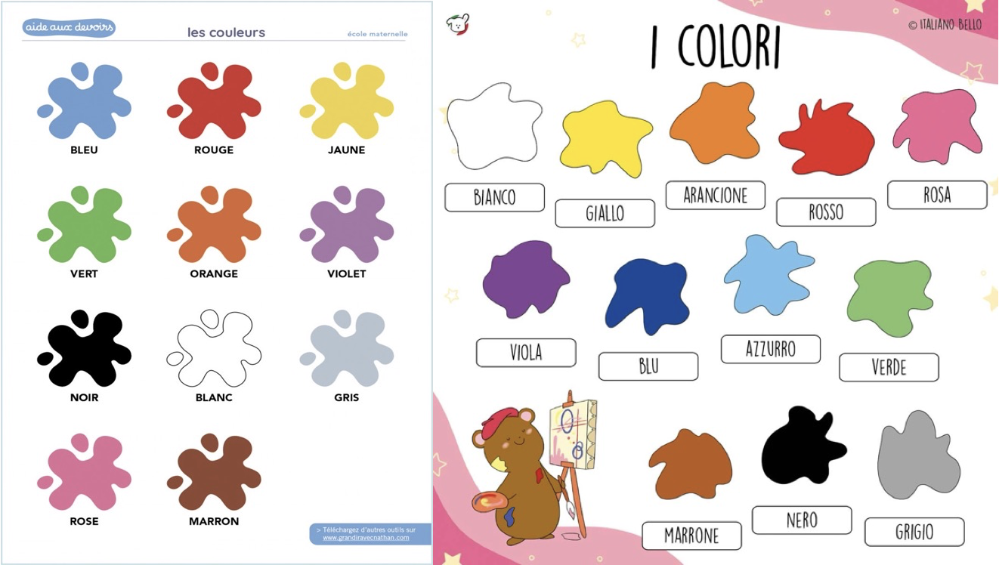
2.5.1 Phonologie et variantes phonétiques
2.5.1.1 Allophones (Distribution libre) :
Sons qui n’entraînent pas de différence de sens entre deux morphèmes
Par ex. en français [puR] « pour » vs [pur] « pour » vs [puχ] « pour » vs [puʁ] « pour »
Trille uvulaire voisée [R]
Fricative uvulaire voisée [ʁ]
Fricative uvulaire sourde [χ]
Roulée alvéolaire [r]
Mais dans certains dialectes néerlandais :
[r] et [χ] = réalisations différentes des phonèmes /r/ et /χ/
/rudə/ = roede vs /χudə/ = goeden
2.5.1.2 Allophones (Distribution complémentaire) :
Sons qui n’entraînent pas de différence de sens entre deux morphèmes
Sons dont la distribution est dictée par l’environnement
Par ex. en français de Belgique
Mais en position finale /ʒu/ « joue » vs /ʃu/ « choux »
/goʃ/ « gauche » [goʃ]
/ʁuʒ/ « rouge » [ʁuʃ]
2.5.1.3 Schéma récapitulatif
2.5.1.4 Exercice 1 : La distribution de [w] et [ɥ] (Français de France vs Français de Belgique)
À partir du corpus ci-dessous, analysez le statut phonologique des sons [w] et [ɥ] en français de France (FF) et en français de Belgique (FB). Déterminez s’ils constituent des phonèmes distincts, des allophones en distribution complémentaire ou des allophones en distribution libre.
** Corpus de données phonétiques**
| Mot | Français de France | Français de Belgique |
| 1. huit | ɥit | wit |
| 2. oui | wi | wi |
| 3. juin | ʒɥɛ̃ | ʒwɛ̃ |
| 4. oiseau | wazo | wazo |
| 5. nuit | nɥi | nwi |
| 6. ouest | wɛst | wɛst |
| 7. cuisine | kɥizin | kwizin |
| 8. chouette | ʃwɛt | ʃwɛt |
| 9. pluie | plɥi | plwi |
| 10. suisse | sɥis | swis |
| 11.joint | ʒwɛ̃ | ʒwɛ̃ |
2.5.1.5 Exercice 2 : La distribution de [e] et [ɛ] selon les locuteurs
À partir du corpus ci-dessous, analysez le statut phonologique des sons [e] et [ɛ ] chez les locuteurs A et B. Déterminez s’ils constituent des phonèmes distincts, des allophones en distribution complémentaire ou des allophones en distribution libre.
** Corpus de données phonétiques**
| Mot | Locuteur A | Locuteur B |
| 1. pré | pʁe | pʁe |
| 2. prêt | pʁɛ | pʁe |
| 3. les | le | le |
| 4. lait | lɛ | le |
| 5. thé | te | te |
| 6. taie | tɛ | te |
| 7. épée | epe | epe |
| 8. épais | epɛ | epe |
| 9. pique-nique | piknik | piknik |
2.6 Le cours de phonétique et phonologie en pratique
2.6.1 Qui ?
Jérémy Genette, Dr. en Linguistique (Université d’Anvers)
Phonéticien et phonologue (de laboratoire)
et vous ?
2.6.2 Évaluation
(6/20) Examen oral pendant la session
Petites questions théoriques et pratiques
‼️ tous les exercices que nous ferons en cours
2.6.3 Durant le cours
Faites les exercices
Posez des questions dès que quelque chose n’est pas clair
2.6.4 Informations pratiques et échéances
- 13 octobre : 1h de phonétique et phonologie
- 20 octobre : 1h de phonétique et phonologie
- 27 octobre : 1h de phonétique et phonologie
- 3 novembre : Atelier PRAAT
Venez avec votre ordinateur en cours si possible
Faire la préparation (voir fin du cours)
- 10 novembre : 1h de phonétique et phonologie
- 17 novembre : 1h de phonétique et phonologie
- 24 novembre : 1h de phonétique et phonologie
- 1ᵉʳ décembre : Pas de cours de phonétique
- 8 décembre : Pas de cours de phonétique
- 15 décembre : Dernière séance (FAQ)
2.6.5 Supports de cours
Sur Toledo, lien vers le site internet du cours pour que vous puissiez avoir tout au même endroit avec les fichiers multimédias etc.
Mot-de-passe: fon-en-fon-26
🚨 c’est un test, donnez-moi votre avis et vos retours sur votre expérience…
2.7 Propriétés articulatoires des voyelles
Propriétés essentielles :
- Pour les voyelles, l’air s’échappe relativement librement par le canal buccal et la cavité buccale est suffisamment grande pour faire résonner la vibration laryngée.
- Elles sont sonores, i.e. prononcées avec vibration des cordes vocales.
- Elles peuvent constituer une syllabe à elles seules.
2.7.1 L’aperture
= la distance entre la langue et la voûte du palais lors de la prononciation de la voyelle
- Ouvertes : [a], [ɑ] et [ɑ̃]
- Mi-ouvertes : [ɛ], [œ], [ɔ], [ɛ̃], [œ̃] et [ɔ̃]
- Mi-fermées : [e], [o], [ø]
- Fermées : [u], [y] et [i]
- Moyennes : [ə]
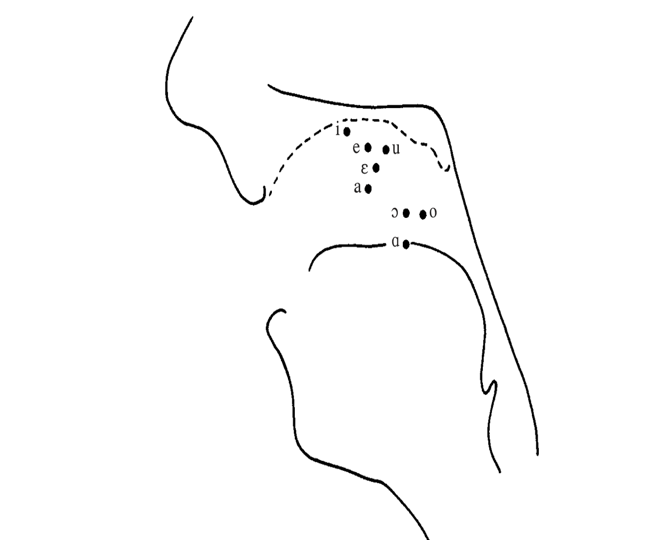
2.7.2 Le lieu d’articulation
- Antérieures : [i], [y], [e], [ø],[ɛ], [œ], [a], [ɑ], [ɛ̃] et [œ̃]
- Centrales : [ə]
- Postérieures : [u], [o], [ɔ], [ɔ̃] et [ɑ̃]
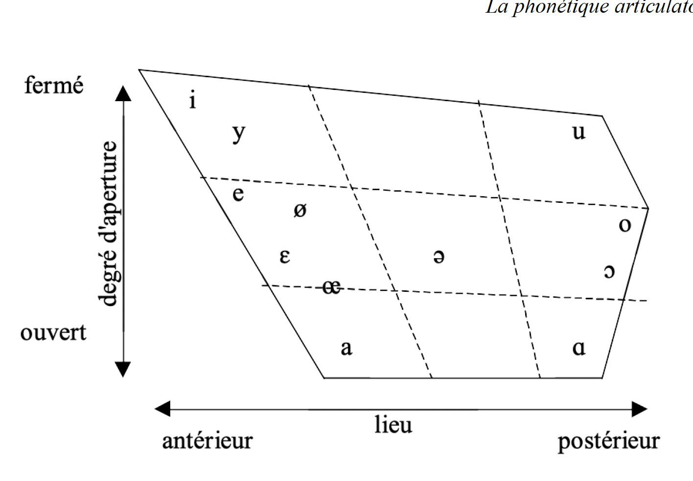
2.7.3 L’arrondissement des lèvres
- Arrondies : [y], [ø], [ə], [œ], [u], [o], [ɔ], [œ̃] et [ɔ̃]
- Non arrondies : [i], [e], [ɛ], [ɛ̃], [ɑ̃], [a] et [ɑ]
Action des lèvres
D’un point de vue typologique, plus une voyelle est postérieure et fermée, plus elle est fréquemment arrondie
Quand les symboles vont par paires, celui de droite représente une voyelle arrondie.
2.8
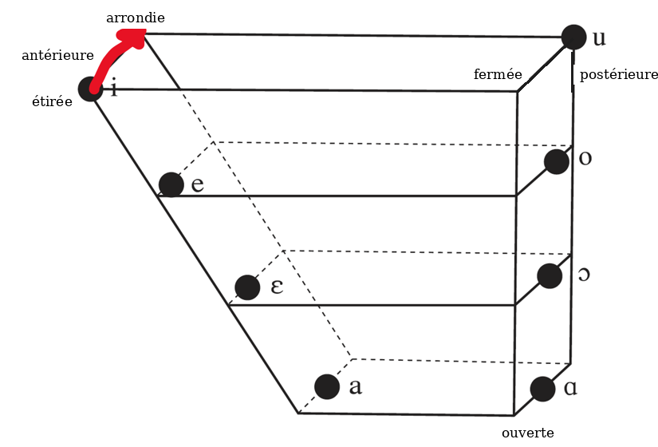
2.8.1 La résonance
- Orales : [y], [ø], [ə], [œ], [i], [e], [ɛ], [u], [o], [ɔ], [a] et [ɑ]
- Nasales : [ɛ̃], [ɑ̃], [œ̃] et [ɔ̃]
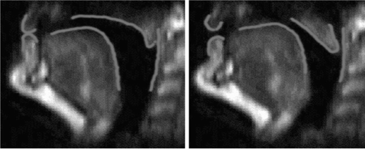
2.8.2 Le « trapèze vocalique » du français moderne
2.9 Introduction à la phonétique acoustique
Grâce à nos poumons, nous créons un flux d’air
Nous modifions ce flux d’air avec nos différents articulateurs
Nous pouvons mesurer le son grâce aux ondes sonores.
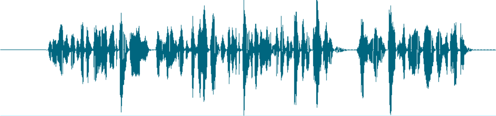
Un son est un changement de pression dans l’air
Le son se déplace sous forme d’ondes
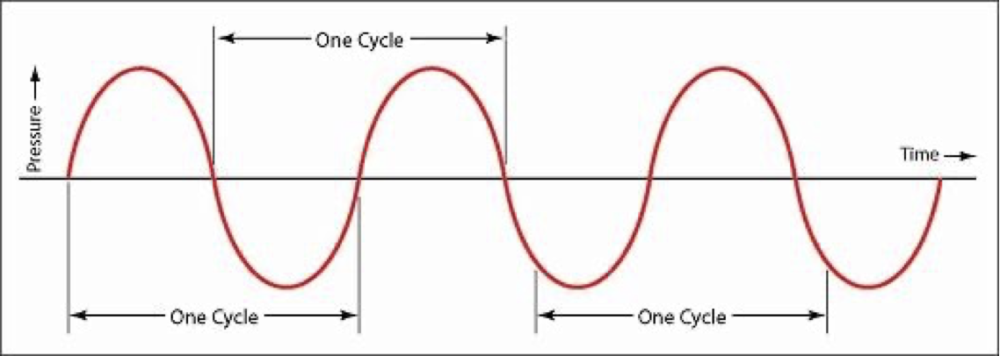
Amplitude = hauteur de l’onde sonore = volume (dB)
Fréquence = Vitesse de vibration des ondes sonores = Hauteur (Hz)
1 Hertz = 1 cycle par seconde
\(f = 1/T\)
Un son de la parole est constitué d’une onde sonore complexe
Complexe = composition de plusieurs ondes sonores en même temps
C’est pourquoi on ne voit pas une seule onde, mais la somme d’ondes sonores différentes
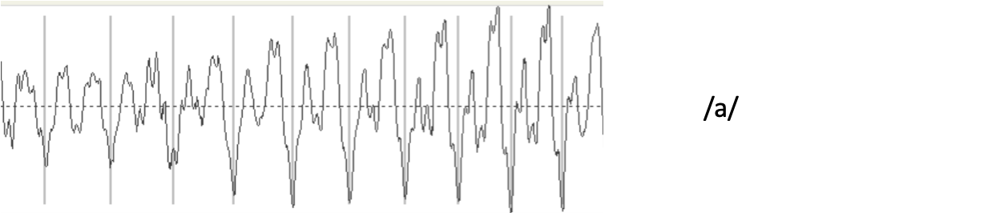
2.10 Le spectrogramme
Onde sonore : axe y = amplitude (= volume)
- Axe des y = quantité de pression d’air au moment x dans le temps
Spectrogramme : axe y = fréquence (= hauteur)
Axe des y = hauteur d’une onde spécifique au moment x dans le temps
- Couleur = Amplitude
Utile pour des ondes sonores complexes avec plusieurs fréquences en même temps “affiche plusieurs ondes simultanément”
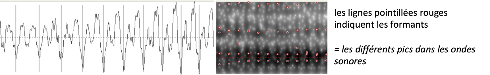
Amplitude = hauteur de l’onde sonore = volume (dB)
Onde sonore : hauteur des pics et des creux (axe des y)
Spectrogramme : couleur : plus foncé = plus haut
Fréquence = nombre de vibrations d’onde sonore = hauteur (Hz)
Onde sonore : distance entre les ondes, nombre de pics
Spectrogramme : Hauteur sur le graphe (axe des y)
2.10.1 Sons voisés
Les voyelles sons des sons voisés
Avec les sons voisés, les cordes vocales vibrent selon un schéma régulier
Ainsi, dans les ondes sonores, vous voyez un motif répétitif = ondes périodiques
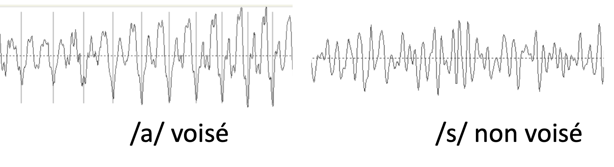
2.10.2 Observations dans le spectrogramme
Ligne claire = onde périodique : beaucoup d’énergie autour d’une fréquence spécifique (= plusieurs pics d’une onde sonore, surtout en spectrogramme bas)
Bruit = onde apériodique : l’énergie est répartie de façon plus aléatoire ## Propriétés acoustiques des vocoïdes
2.11 La source
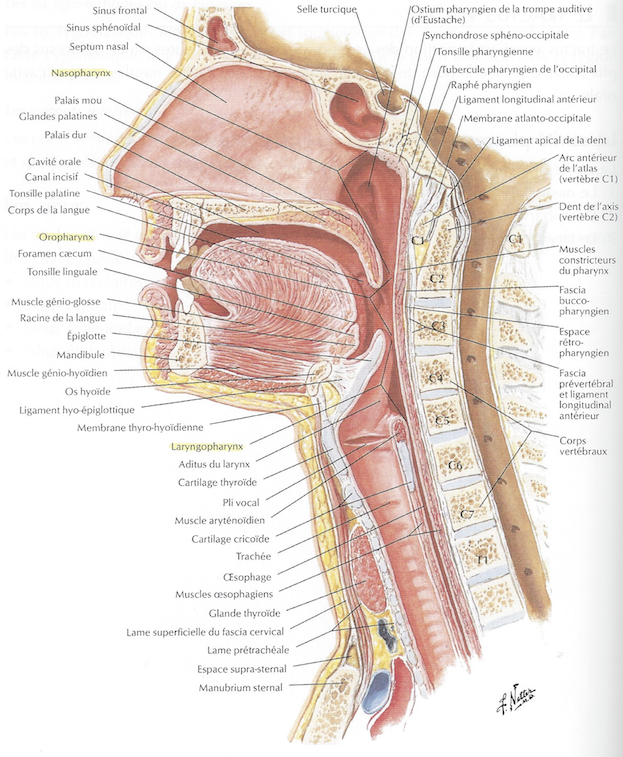
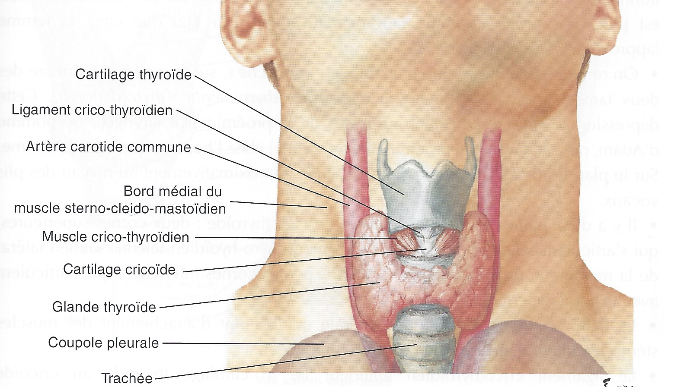
Vue de côté

Vue du dessus

2.12 Le filtre
L’air passe par trois cavités :
Le pharynx
La cavité buccale
La cavité nasale
Les cavités résonnent
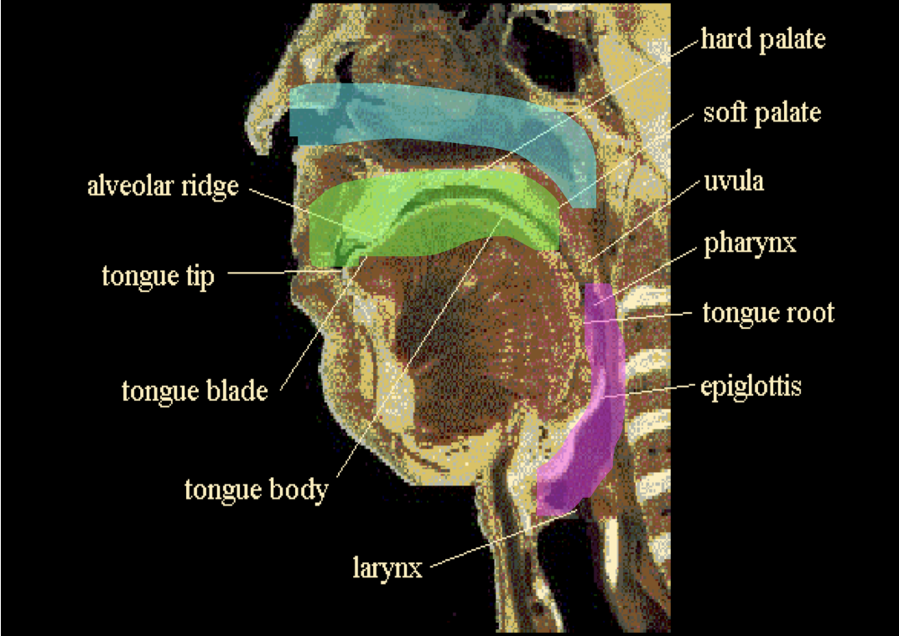
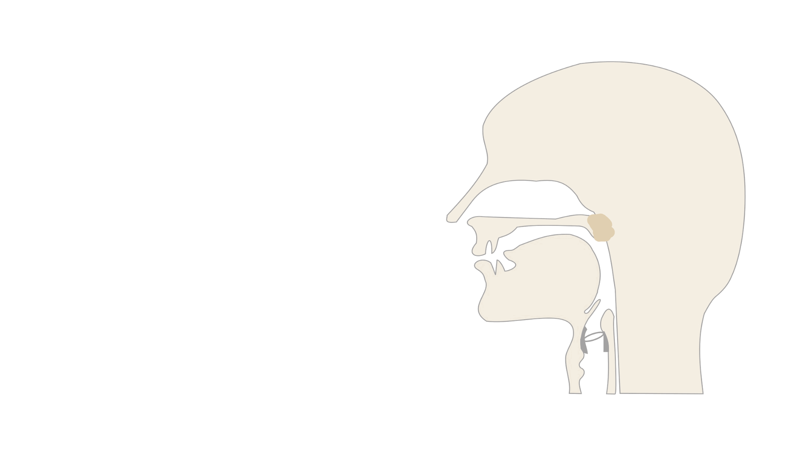

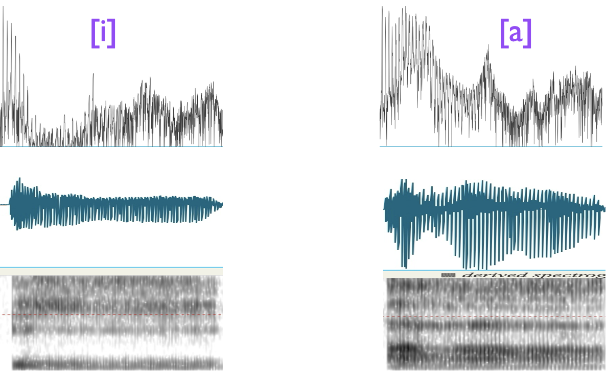
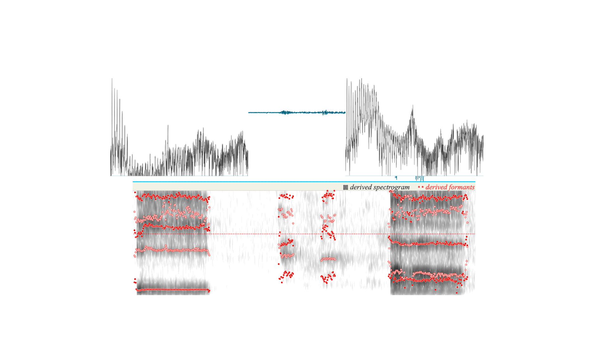
2.12.1 Cavités et formants

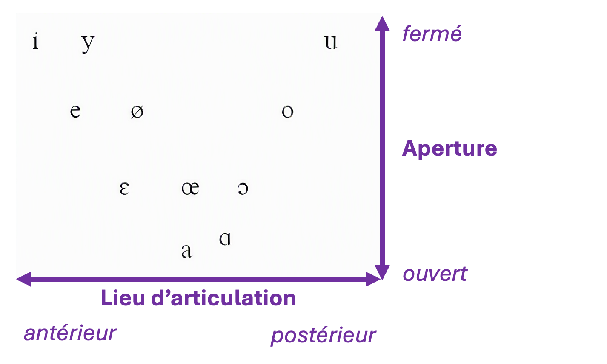
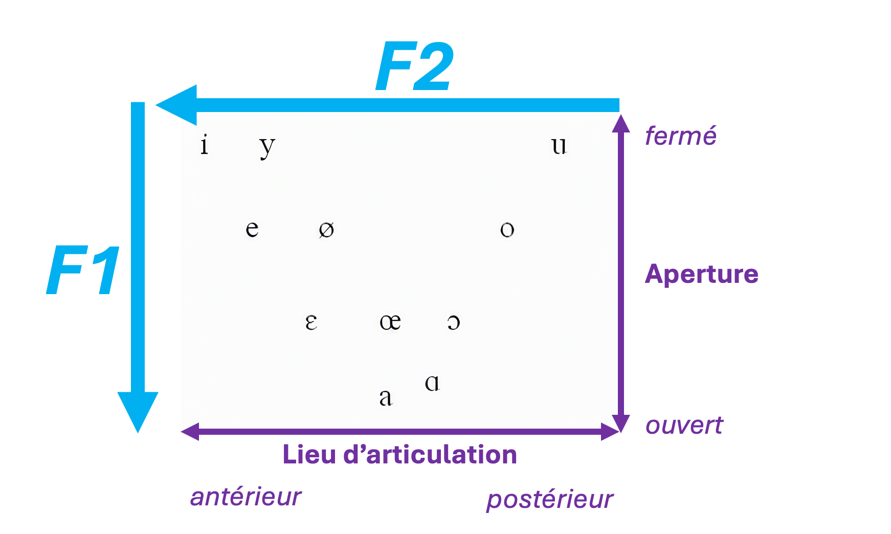
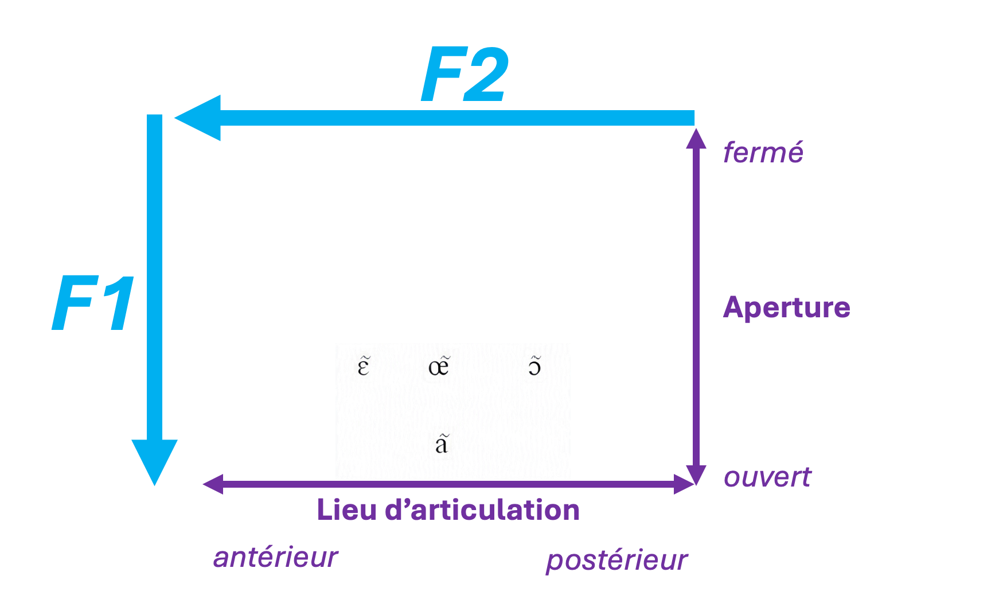
Préparation pour le 3 novembre
Les tâches attendues nécessitent l’utilisation du matériel suivant :
- Un casque audio
- Un système de gestion des corpus (ordinateur muni du logiciel PRAAT) - Fichiers audio (.wav)
- L’API
2.13 Texte à enregistrer
Où qu’il aille, le chasseur est gourmand. À l’affût, guettant le fou-de-bassant, au petit jour, sa besace est souvent garnie de quignons de pain bis, d’andouillette à la ficelle. Y ajouter un flacon de Chiroubles ne lui fait pas peur.
De retour en famille, il épluche vigoureusement les carottes, pèle les patates, rissole ses choux-fleurs et se prépare un poulet au court-bouillon. « Va pour cette fois encore », lui dit son épouse en considérant la pitance. Guillerette, elle ajoute : « mais pourquoi ne préparez-vous jamais de gigot ? »
2.14 Installation de Praat
2.14.1 Avant de commencer
- Praat est gratuit et se télécharge uniquement sur le site officiel : praat.org.
- Il n’y a pas d’installateur : on télécharge un fichier et on le copie à un endroit de son ordinateur.
- La version actuelle est la 7.0.02 (août 2026). Praat est mis à jour souvent : prenez toujours celle proposée sur le site officiel.
- Attention : Ne téléchargez jamais Praat depuis un autre site que praat.org.
2.14.2 Liens directs de téléchargement
- Windows : Téléchargez le fichier sur la page de téléchargement Windows (ex.
praat7002_win-x64v3.zip). - Macintosh : Téléchargez le fichier
.dmgsur la page de téléchargement Mac (ex.praat7002_mac.dmg).
2.14.3 Procédure d’installation
2.14.3.1 Sous Windows
- Double-cliquez sur le fichier
.ziptéléchargé. - Glissez l’application
Praat.exehors du zip (vers votre Bureau ou votre dossierDocuments). - Lancez Praat depuis ce nouvel emplacement (et non depuis l’intérieur du zip).
- Si Windows SmartScreen bloque l’exécution : cliquez sur Informations complémentaires, puis sur Exécuter quand même (ou faites un clic droit sur
Praat.exe> Propriétés > cochez Débloquer).
2.14.3.2 Sous Mac
- Ouvrez le fichier
.dmgtéléchargé. - Glissez l’icône Praat dans votre dossier Applications.
- Lancez Praat depuis le dossier Applications.
- Si macOS bloque l’ouverture : rendez-vous dans Réglages Système > Confidentialité et sécurité, puis cliquez sur Ouvrir quand même.
2.14.3.3 Vérification du lancement
Deux fenêtres s’ouvrent au lancement de Praat : - Praat Objects : la fenêtre principale où apparaissent vos objets audio et vos analyses. - Praat Picture : la fenêtre réservée au tracé de figures et graphiques.
2.14.3.4 Enregistrer un son en mono dans Praat
Pour réaliser des analyses acoustiques précises (sonagrammes, pitch, etc.), il est fortement recommandé d’enregistrer le signal audio en mono (un seul canal).
2.14.3.5 Étapes pour l’enregistrement :
2.14.3.5.1 Ouvrir la fenêtre d’enregistrement mono :
- Dans la fenêtre Praat Objects, cliquez sur le menu du haut : New > Record mono sound…
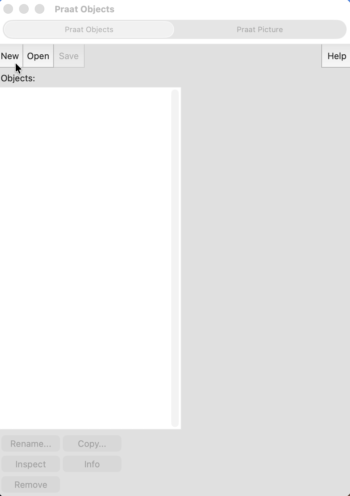
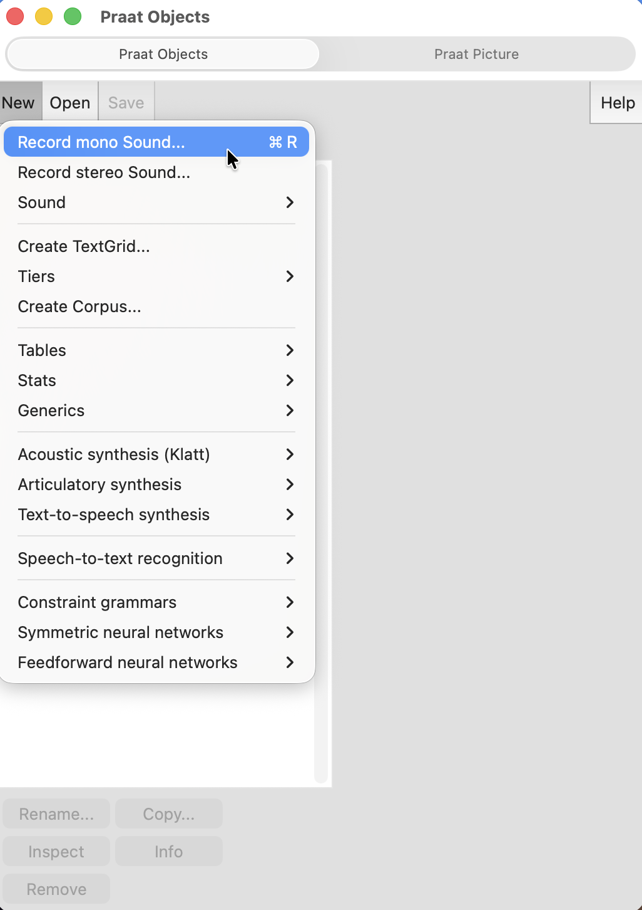
2.14.3.5.2 Configurer et tester le niveau d’entrée :
- Assurez-vous que votre casque audio / microphone est bien sélectionné dans le menu déroulant Input source.
- Parlez normalement pour tester : les jauges de niveau vert/jaune doivent s’animer. Veillez à ce que le niveau ne touche pas la zone rouge (pour éviter la saturation/clipping).
2.15
2.15.0.0.1 Lancer l’enregistrement :
- Cliquez sur le bouton Record en bas à gauche.
- Lisez attentivement le texte à enregistrer.
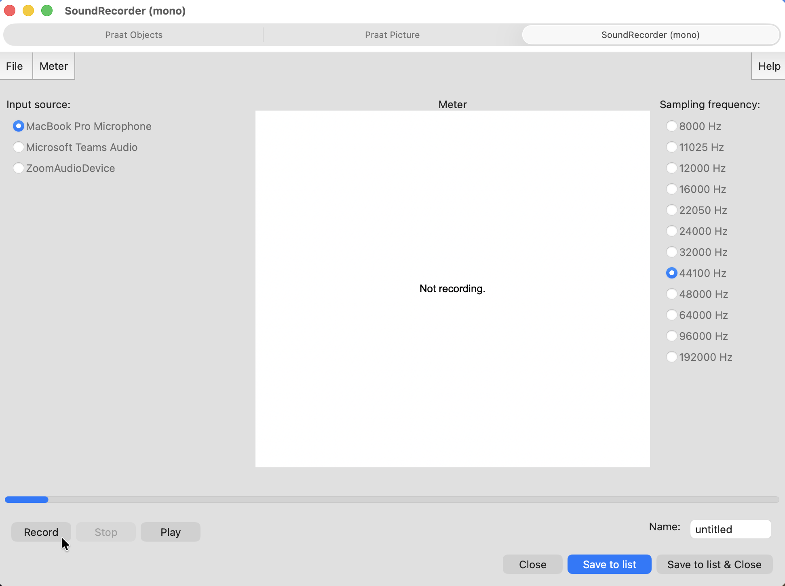
2.15.0.0.2 Arrêter l’enregistrement : - Une fois la lecture terminée, cliquez sur le bouton Stop. ##### Sauvegarder et envoyer vers Praat : - Dans le champ Name, donnez un nom à votre enregistrement (ex. Texte_Chasseur). - Cliquez sur Save to list and Close pour fermer la fenêtre d’enregistrement et transférer l’objet sonore directement dans la fenêtre Praat Objects.
::: side-by-side
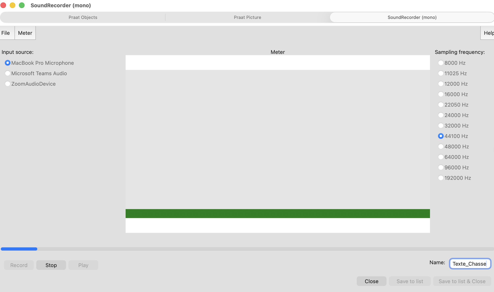
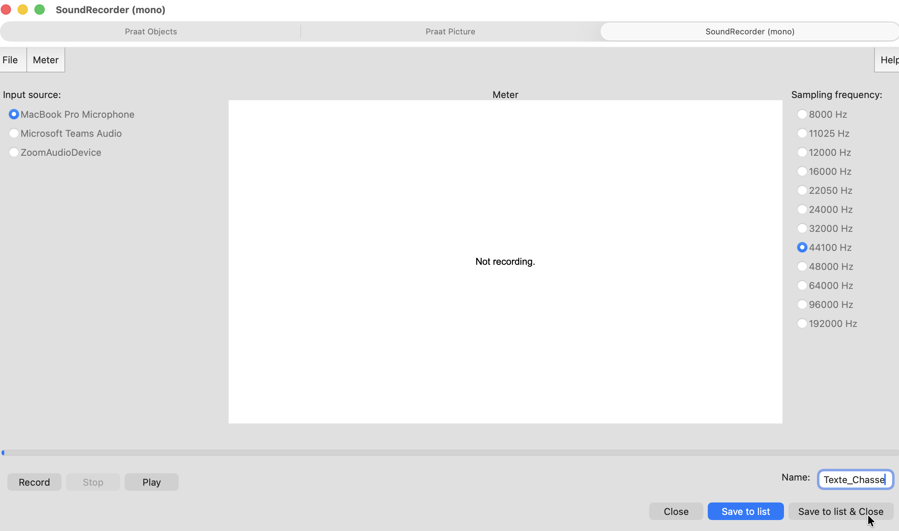
:::2.15.0.0.3 Exporter le fichier au format .wav sur le disque dur :
- Sélectionnez votre son dans la liste Praat Objects.
- Dans le menu latéral droit, cliquez sur Save > Save as WAV file…
- Enregistrez votre fichier dans le dossier de travail prévu.
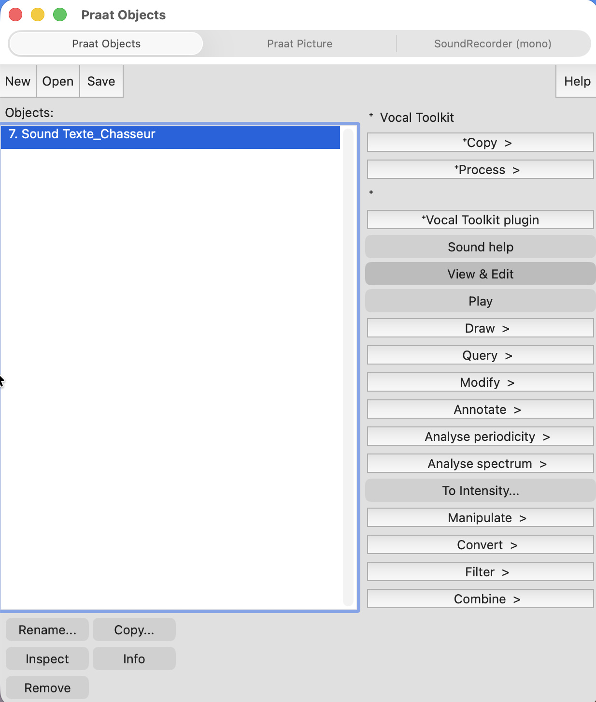
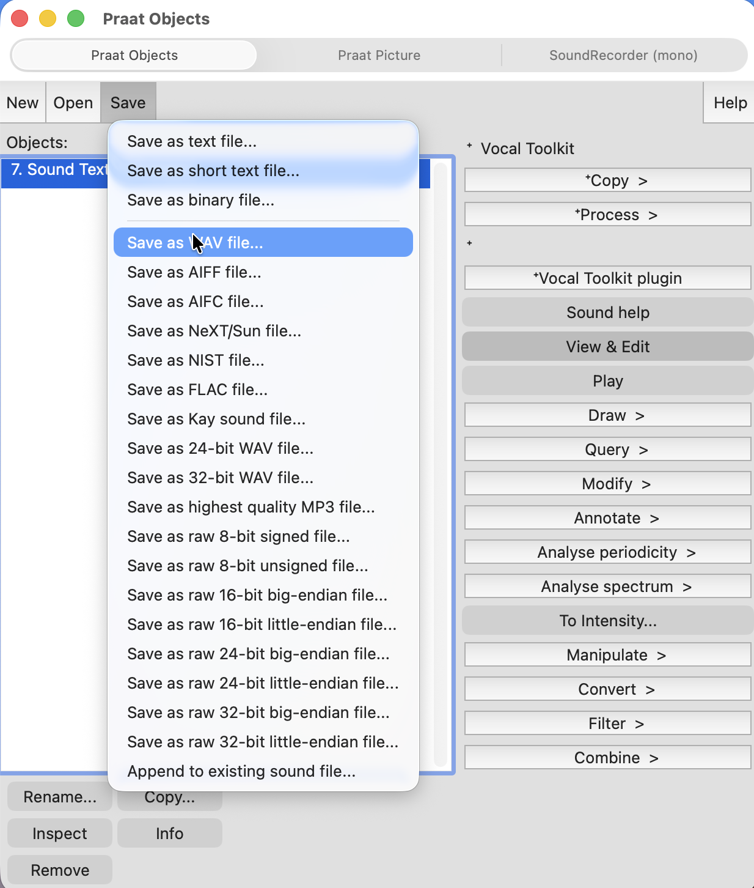